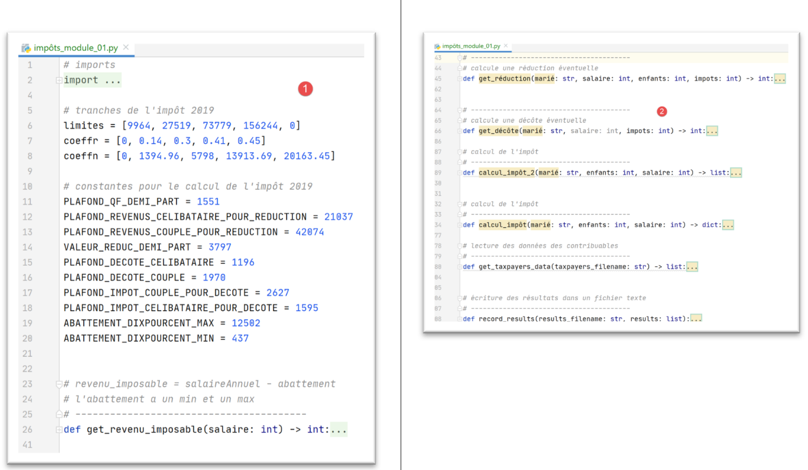

8. تمرين تطبيقي – الإصدار 1
8.1. المشكلة

يتيح الجدول أعلاه حساب الضريبة في الحالة المبسطة للمكلف الذي لا يعلن سوى راتبه الوحيد. وكما تشير الملاحظة (1)، فإن الضريبة المحسوبة بهذه الطريقة هي الضريبة قبل تطبيق الآليات الثلاث التالية:
- تحديد سقف الحصة العائلية الذي ينطبق على الدخل المرتفع؛
- الخصم والتخفيض الضريبي اللذين ينطبقان على الدخل المنخفض؛
وبالتالي، يتضمن حساب الضريبة الخطوات التالية [http://impotsurlerevenu.org/comprendre-le-calcul-de-l-impot/1217-calcul-de-l-impot-2019.php]:

نقترح كتابة برنامج يسمح بحساب الضريبة المستحقة على المكلف في الحالة المبسطة التي يكون فيها المكلف لا يعلن سوى راتبه الوحيد:
8.1.1. حساب الضريبة الإجمالية
يمكن حساب الضريبة الإجمالية بالطريقة التالية:
نحسب أولاً عدد الحصص الخاصة بالمكلف:
- يُحسب لكل والد حصة واحدة؛
- يُضاف لكل من الطفلين الأولين نصف حصة؛
- يُحسب لكل طفل من الأطفال التاليين حصة واحدة:
وبالتالي، فإن عدد الحصص هو:
- nbParts=1+nbEnfants*0,5+(عدد_الأطفال-2)*0,5 إذا كان الموظف غير متزوج؛
- nbParts=2+nbEnfants*0,5+(nbEnfants-2)*0,5 إذا كان متزوجًا؛
- حيث nbEnfants هو عدد أطفاله؛
- يُحسب الدخل الخاضع للضريبة R=0.9*S حيث S هو الراتب السنوي؛
- يُحسب الحصّة العائلية QF=R/nbParts؛
- يُحسب الضريبة الإجمالية I بناءً على البيانات التالية (2019):
9964 | 0 | 0 |
27519 | 0.14 | 1394.96 |
73779 | 0.3 | 5798 |
156244 | 0.4 | 13913.69 |
0 | 0.45 | 20163.45 |
يحتوي كل سطر على 3 حقول: champ1، champ2، champ3. لحساب الضريبة I، نبحث عن السطر الأول الذي يكون فيه QF <= الحقل 1 ونأخذ قيم هذا السطر. على سبيل المثال، بالنسبة لموظف متزوج ولديه طفلان وراتب سنوي S يبلغ 50000 يورو:
الدخل الخاضع للضريبة: R=0,9*S=45000
عدد الحصص: nbParts=2+2*0,5=3
الحصة العائلية: QF=45000/3=15000
السطر الأول الذي يكون فيه QF <= الحقل 1 هو التالي:
وبالتالي، فإن الضريبة I تساوي 0.14*R – 1394,96*nbParts=[0,14*45000-1394,96*3]=2115. ويتم تقريب الضريبة إلى أقرب يورو أقل.
إذا كانت العلاقة QF <= حقل1 صحيحة منذ السطر الأول، فإن الضريبة تكون صفرًا.
إذا كان QF بحيث لا تتحقق العلاقة QF<=champ1 أبدًا، فسيتم استخدام معاملات السطر الأخير. هنا:
مما يعطي الضريبة الإجمالية I=0.45*R – 20163,45*nbParts.
8.1.2. الحد الأقصى للمنحة العائلية

لمعرفة ما إذا كان الحد الأقصى لحصة الأسرة QF ينطبق، نعيد حساب الضريبة الإجمالية بدون احتساب الأطفال. وبالنسبة للموظف المتزوج الذي لديه طفلان وراتب سنوي S يبلغ 50000 يورو:
الدخل الخاضع للضريبة: R=0,9*S=45000
عدد الحصص: nbParts=2 (لم يعد يتم احتساب الأطفال)
الحصة العائلية: QF=45000/2=22500
السطر الأول الذي يكون فيه QF <= الحقل 1 هو التالي:
وبالتالي، فإن الضريبة I تساوي 0.14*R – 1394,96*nbParts=[0,14*45000-1394,96*2]=3510.
الربح الأقصى المرتبط بالأطفال: 1551 * 2 = 3102 يورو
الضريبة الدنيا: 3510 - 3102 = 408 يورو
الضريبة الإجمالية مع 3 حصص التي تم حسابها مسبقًا وتبلغ 2115 يورو أعلى من الضريبة الدنيا البالغة 408 يورو، وبالتالي لا ينطبق سقف الإعفاء العائلي في هذه الحالة.
بشكل عام، الضريبة الإجمالية تساوي (الضريبة 1، الضريبة 2) حيث:
- [impôt1]: هو الضريبة الإجمالية المحسوبة مع الأطفال؛
- [impôt2]: هو الضريبة الإجمالية المحسوبة بدون احتساب الأطفال، مطروحًا منها الحد الأقصى للخصم (وهو هنا 1551 يورو لكل نصف حصة) المرتبط بالأطفال؛
8.1.3. حساب الخصم

بالنسبة للموظف المتزوج ولديه طفلان ويبلغ راتبه السنوي S 50000 يورو:
الضريبة الإجمالية (2115) الناتجة عن الخطوة السابقة أقل من 2627 يورو للزوجين (1595 يورو للعازب): وبالتالي يُطبق الخصم. ويتم الحصول عليه من خلال الحساب التالي:
التخفيض = الحد الأدنى (للزوجين = 1970 / للعازب = 1196) - 0,75 * الضريبة الإجمالية
الخصم = 1970 - 0,75 × 2115 = 383,75، مقربًا إلى 384 يورو.
الضريبة الإجمالية الجديدة = 2115 - 384 = 1731 يورو
8.1.4. حساب التخفيض الضريبي

تحت حد معين، يتم تطبيق تخفيض بنسبة 20% على الضريبة الإجمالية الناتجة عن الحسابات السابقة. في عام 2019، كانت الحدود كما يلي:
- الأعزب: 21037 يورو؛
- الأزواج: 42074 يورو؛ (يبدو أن الرقم 37968 المستخدم في المثال أعلاه خاطئ)؛
يُضاف إلى هذا الحد القيمة التالية: 3797 * (عدد نصف الحصص التي يضيفها الأبناء).
وبالنسبة للموظف المتزوج ولديه طفلان ويبلغ راتبه السنوي S 50000 يورو:
- دخله الخاضع للضريبة (45000 يورو) أقل من الحد الأدنى (42074+2*3797)=49668 يورو؛
- وبالتالي يحق له الحصول على تخفيض بنسبة 20٪ من ضريبته: 1731 * 0,2 = 346,2 يورو، مقربًا إلى 347 يورو؛
- يصبح الضريبة الإجمالية للمكلف: 1731 - 347 = 1384 يورو؛
8.1.5. حساب الضريبة الصافية
سينتهي حسابنا عند هذا الحد: سيكون الضريبة الصافية المستحقة الدفع 1384 يورو. في الواقع، يمكن للمكلف بالضريبة الاستفادة من تخفيضات أخرى، لا سيما للتبرعات المقدمة إلى المنظمات ذات المصلحة العامة أو العامة.
8.1.6. حالة ذوي الدخل المرتفع
المثال السابق ينطبق على غالبية حالات الموظفين. ومع ذلك، يختلف حساب الضريبة في حالة أصحاب الدخل المرتفع.
8.1.6.1. الحد الأقصى للتخفيض بنسبة 10% على الدخل السنوي
في معظم الحالات، يتم حساب الدخل الخاضع للضريبة بالصيغة التالية: R=0,9*S حيث S هو الراتب السنوي. ويُطلق على ذلك اسم التخفيض بنسبة 10٪. ويخضع هذا التخفيض لسقف أقصى. في عام 2019:
- لا يمكن أن يتجاوز 12502 يورو؛
- لا يمكن أن يقل عن 437 يورو؛
لنأخذ مثالاً لموظف غير متزوج وليس لديه أطفال ويبلغ راتبه السنوي 200000 يورو:
- يبلغ التخفيض بنسبة 10% 20000 يورو > 12502 يورو. وبالتالي يتم تخفيضه إلى 12502 يورو؛
8.1.6.2. الحد الأقصى للمعامل الأسري
لنأخذ حالة ينطبق فيها الحد الأقصى للمعامل الأسري المذكور في الفقرة |الحد الأقصى للمعامل الأسري|. لنأخذ مثال زوجين لديهما ثلاثة أطفال ودخل سنوي قدره 100000 يورو. لنستعرض خطوات الحساب:
- الخصم بنسبة 10٪ يبلغ 10000 يورو < 12502 يورو. وبالتالي، فإن الدخل الخاضع للضريبة R يساوي 100000 - 10000 = 90000 يورو؛
- يمتلك الزوجان nbParts = 2 + 0,5*2 + 1 = 4 حصص؛
- وبالتالي فإن نصيب الأسرة هو QF = R/nbParts = 90000/4 = 22500 يورو؛
- ضريبه الإجمالي I1 مع وجود أطفال هو I1=0,14*90000-1394,96*4= 7020 يورو؛
- ضريبته الإجمالية I2 بدون أطفال:
- QF=90000/2=45000 يورو؛
- I2=0,3*90000-5798*2=15404 يورو؛
- تنص قاعدة الحد الأقصى للحصة العائلية على أن المكسب الناتج عن وجود أطفال لا يمكن أن يتجاوز (1551 × 4 نصف حصص) = 6204 يورو. لكن في هذه الحالة، يبلغ المكسب I2-I1 = 15404 - 7020 = 8384 يورو، وهو بذلك أعلى من 6204 يورو؛
- وبالتالي يُعاد حساب الضريبة الإجمالية على النحو التالي: I3 = I2-6204 = 15404 - 6204 = 9200 يورو؛
لن يحصل هذا الزوج على أي خصم أو تخفيض، وستكون ضريبتهما النهائية 9200 يورو.
8.1.7. الأرقام الرسمية
يعد حساب الضريبة أمرًا معقدًا. وستُجرى الاختبارات طوال هذا المستند باستخدام الأمثلة التالية. النتائج مأخوذة من أداة المحاكاة الخاصة بإدارة الضرائب |https://www3.impots.gouv.fr/simulateur/calcul_impot/2019/simplifie/index.htm|:
المكلف | النتائج الرسمية | نتائج الخوارزمية الواردة في الوثيقة |
زوجان ولديهما طفلان ودخلهما السنوي يبلغ 55555 يورو | الضريبة = 2815 يورو معدل الضريبة = 14% | الضريبة = 2814 يورو معدل الضريبة = 14% |
زوجان ولديهما طفلان ودخلهما السنوي 50000 يورو | الضريبة = 1385 يورو الخصم = 720 يورو التخفيض = 0 يورو معدل الضريبة = 14% | الضريبة = 1384 يورو الخصم = 384 يورو الخصم = 347 يورو معدل الضريبة = 14% |
زوجان لديهما 3 أطفال ودخل سنوي يبلغ 50000 يورو | الضريبة = 0 يورو الخصم = 384 يورو الخصم = 346 يورو معدل الضريبة = 14% | الضريبة = 0 يورو الخصم = 720 يورو الخصم = 0 يورو معدل الضريبة = 14% |
أعزب ولديه طفلان ودخله السنوي 100000 يورو | الضريبة = 19884 يورو الخصم = 0 يورو الخصم = 0 يورو معدل الضريبة = 41% | الضريبة = 19884 يورو الزيادة = 4480 يورو الخصم = 0 يورو الخصم = 0 يورو معدل الضريبة = 41% |
أعزب ولديه 3 أطفال ودخل سنوي قدره 100000 يورو | الضريبة = 16782 يورو الخصم = 0 يورو الخصم = 0 يورو معدل الضريبة = 41% | الضريبة = 16782 يورو الزيادة = 7176 يورو الخصم = 0 يورو الخصم = 0 يورو معدل الضريبة = 41% |
زوجان لديهما 3 أطفال ودخل سنوي قدره 100000 يورو | الضريبة = 9200 يورو الخصم = 0 يورو الخصم = 0 يورو معدل الضريبة = 30% | الضريبة = 9200 يورو الزيادة = 2180 يورو الخصم = 0 يورو الخصم = 0 يورو معدل الضريبة = 30% |
زوجان لديهما 5 أطفال ودخل سنوي قدره 100000 يورو | الضريبة = 4230 يورو الخصم = 0 يورو الخصم = 0 يورو معدل الضريبة = 14% | الضريبة = 4230 يورو الخصم = 0 يورو الخصم = 0 يورو معدل الضريبة = 14% |
أعزب بدون أطفال ودخل سنوي قدره 100000 يورو | الضريبة = 22986 يورو الخصم = 0 يورو الخصم = 0 يورو معدل الضريبة = 41% | الضريبة = 22986 يورو الزيادة = 0 يورو الخصم = 0 يورو الخصم = 0 يورو معدل الضريبة = 41% |
زوجان ولديهما طفلان ودخلهما السنوي 30000 يورو | الضريبة = 0 يورو الخصم = 0 يورو الخصم = 0 يورو معدل الضريبة = 0% | الضريبة = 0 يورو الخصم = 0 يورو الخصم = 0 يورو معدل الضريبة = 0% |
أعزب بدون أطفال ودخل سنوي قدره 200000 يورو | الضريبة = 64211 يورو الخصم = 0 يورو الخصم = 0 يورو معدل الضريبة = 45% | الضريبة = 64210 يورو الزيادة = 7498 يورو الخصم = 0 يورو الخصم = 0 يورو معدل الضريبة = 45% |
زوجان لديهما 3 أطفال ودخل سنوي يبلغ 200000 يورو | الضريبة = 42843 يورو الخصم = 0 يورو الخصم = 0 يورو معدل الضريبة = 41% | الضريبة = 42842 يورو الزيادة = 17283 يورو الخصم = 0 يورو الخصم = 0 يورو معدل الضريبة = 41% |
فيما سبق، يُطلق مصطلح «الزيادة» على المبلغ الإضافي الذي يدفعه أصحاب الدخل المرتفع بسبب ظاهرتين:
- تحديد سقف للخصم بنسبة 10% على الدخل السنوي؛
- تحديد سقف للمعامل الأسري؛
لم يتسن التحقق من هذا المؤشر لأن أداة المحاكاة الخاصة بإدارة الضرائب لا توفره.
ونلاحظ أن الخوارزمية الواردة في الوثيقة تعطي ضريبة صحيحة في كل مرة، مع هامش خطأ يبلغ 1 يورو. وينشأ هامش الخطأ هذا عن عمليات التقريب. فجميع المبالغ المالية يتم تقريبها أحيانًا إلى اليورو الأعلى، وأحيانًا إلى اليورو الأدنى. ونظرًا لعدم معرفتي بالقواعد الرسمية، فقد تم تقريب المبالغ النقدية الواردة في خوارزمية الوثيقة:
- إلى اليورو الأعلى بالنسبة للخصومات والتخفيضات؛
- إلى اليورو الأدنى بالنسبة للزيادة الضريبية والضريبة النهائية؛
سنقوم بتطوير عدة إصدارات لتطبيق حساب الضريبة.
8.2. الإصدار 1

8.2.1. النص البرمجي الرئيسي
نقدم برنامجًا أوليًا حيث:
- البيانات اللازمة لحساب الضريبة مكتوبة بشكل ثابت في الكود على شكل قوائم وثوابت؛
- توجد بيانات دافعي الضرائب (الحالة الاجتماعية، عدد الأبناء، الراتب) في ملف نصي أول [taxpayersdata.txt]؛
- يتم تخزين نتائج حساب الضريبة (المتزوج، والأطفال، والراتب، والضريبة) في ملف نصي ثانٍ [résultats.txt]؛
النص البرمجي [v-01/main.py] هو كما يلي:
# الوحدات النمطية
import sys
from impots.v01.shared.impôts_module_01 import *
# main -----------------------
# الثوابت
# ملف دافعي الضرائب
DATA = "./data/taxpayersdata.txt"
# ملف النتائج
RESULTATS = "./data/résultats.txt"
try:
# قراءة بيانات دافعي الضرائب
tax_payers = get_taxpayers_data(DATA)
# قائمة النتائج
results = []
# حساب ضريبة المكلفين
for tax_payer in tax_payers:
# يُرجع حساب الضريبة قاموسًا من المفاتيح
# ['marié', 'enfants', 'salaire', 'impôt', 'surcôte', 'décôte', 'réduction', 'taux']
result = calcul_impôt(tax_payer['marié'], tax_payer['enfants'], tax_payer['salaire'])
# تمت إضافة القاموس إلى قائمة النتائج
results.append(result)
# يتم تسجيل النتائج
record_results(RESULTATS, results)
except BaseException as erreur:
# قد تحدث أخطاء مختلفة: عدم وجود الملف، أو محتوى الملف غير صحيح
# يتم عرض الخطأ والخروج من التطبيق
print(f"l'erreur suivante s'est produite : {erreur}]\n")
sys.exit()
ملاحظات
- السطر 4: يتم استخدام الوحدة النمطية [impots.v01.modules.impôts_module_01]. تجدر الإشارة إلى أن هذا المسار يُحسب انطلاقًا من جذر المشروع PyCharm؛
- السطر 10: الملف [data/taxpayersdata.txt] هو كما يلي:
يمثل كل سطر مجموعة مكونة من ثلاثة عناصر [marié / pacsé ou pas, nombre d'enfants, salaire annuel en euros].
- السطر 12: الملف الذي سيتم فيه وضع نتائج حساب الضريبة لكل دافع ضرائب في الملف [taxpayersdata.txt]. وسيكون محتواه كما يلي:
- السطر 16: يتم استرداد بيانات المكلفين الواردة في [taxpayersdata.txt]. يتم استرداد قائمة بقواميس المفاتيح [marié, enfants, salaire]، حيث يمثل كل قاموس مكلفًا واحدًا؛
- الأسطر 17-25: يتم حساب الضريبة المستحقة على دافعي الضرائب الواردة في القائمة [taxPayers]. يتم استرداد قائمة [results]، حيث يمثل كل عنصر فيها مرة أخرى قاموسًا للمفاتيح [marié, enfants, salaire, impôt, surcôte, décôte, réduction, taux]؛
- السطر 27: يتم تسجيل قائمة النتائج [results] في الملف [résultats.txt] بالشكل الموضح أعلاه؛
- الأسطر 28-32: يتم إيقاف جميع الاستثناءات التي قد تنشأ من الوحدة النمطية [impots.v01.modules.impôts_module_01]؛
سنقوم الآن بتفصيل الوظائف الثلاث التي يستخدمها البرنامج النصي [main]:
- [get_taxpayers_data]: لقراءة بيانات دافعي الضرائب؛
- [calcul_impôt]: لحساب الضرائب المستحقة عليهم؛
- [record_results]: لتسجيل النتائج في ملف نصي؛
توجد جميع هذه الوظائف في الوحدة النمطية [impots.modules.impôts_module_01].
8.2.2. الوحدة النمطية [impots.v01.shared.impôts_module_01]
تم تجميع الوظائف اللازمة لحساب الضريبة في الوحدة النمطية [impots.v01.shared.impôts_module_01]:

- في [1]: تعريف الثوابت الخاصة بحساب الضريبة؛
- في الوحدة النمطية [2]: قائمة وظائف الوحدة النمطية؛
8.2.3. الوظيفة [get_taxpayers_data]
الوظيفة [get_taxpayers_data] هي كما يلي:
# عمليات الاستيراد
import codecs
…
# قراءة بيانات دافعي الضرائب
# ----------------------------------------
def get_taxpayers_data(taxpayers_filename: str) -> list:
# قراءة بيانات دافعي الضرائب
file = None
try:
# قائمة دافعي الضرائب
taxpayers = []
# فتح الملف
file = codecs.open(taxpayers_filename, "r", "utf8")
# قراءة السطر الأول من ملف دافعي الضرائب
ligne = file.readline().strip()
# ما دام هناك سطر متبقي للاستخدام
while ligne != '':
# يتم استرداد الحقول الثلاثة «متزوج» و«أطفال» و«الراتب» التي تشكل السطر
(marié, enfants, salaire) = ligne.split(",")
# إضافتها إلى قائمة دافعي الضرائب
taxpayers.append({'marié': marié.strip().lower(), 'enfants': int(enfants), 'salaire': int(salaire)})
# يتم قراءة سطر جديد من ملف دافعي الضرائب
ligne = file.readline().strip()
# نُرجع النتيجة
return taxpayers
finally:
# يتم إغلاق الملف إذا كان مفتوحًا
if file:
file.close()
ملاحظات
- السطر 7: [taxpayers_filename] هو اسم الملف المراد معالجته. تُرجع الدالة قائمة؛
- الأسطر 18-24: حلقة معالجة الأسطر [marié, enfants, salaire] من الملف النصي؛
- السطر 20: يتم استرداد العناصر الثلاثة للسطر. نفترض هنا أن السطر صحيح من الناحية النحوية، أي أنه يحتوي بالفعل على العناصر الثلاثة المتوقعة؛
- السطر 22: يتم إنشاء قاموس بالمفاتيح [marié, enfants, salaire] ويتم إضافة هذا القاموس إلى القائمة [taxPayers]؛
- السطر 26: بمجرد معالجة الملف، يتم إرجاع القائمة [taxPayers]؛
- الأسطر 10-30: نلاحظ أنه لم يتم وضع جملة [catch] في [try] في السطر 10. جملة [catch] ليست إلزامية. في السطر 27، تم إدراج جملة [finally] لإغلاق الملف النصي في جميع الحالات، سواء حدث خطأ أم لا؛
- تسمح بنية try / finally هذه بمرور استثناء محتمل (لا يوجد أمر catch). سيتم تمرير هذا الاستثناء إلى البرنامج النصي الرئيسي [main] الذي سيتوقف ويعرض الاستثناء (انظر الفقرة |البرنامج النصي الرئيسي|). تم استخدام هذه الآلية في معظم وظائف الوحدة النمطية؛
8.2.4. الوظيفة [calcul_impôt]
الوظيفة [calcul_impôt] هي كما يلي:
# الاستيرادات
import codecs
import math
# شرائح الضريبة لعام 2019
limites = [9964, 27519, 73779, 156244, 0]
coeffr = [0, 0.14, 0.3, 0.41, 0.45]
coeffn = [0, 1394.96, 5798, 13913.69, 20163.45]
# الثوابت لحساب الضريبة لعام 2019
PLAFOND_QF_DEMI_PART = 1551
PLAFOND_REVENUS_CELIBATAIRE_POUR_REDUCTION = 21037
PLAFOND_REVENUS_COUPLE_POUR_REDUCTION = 42074
VALEUR_REDUC_DEMI_PART = 3797
PLAFOND_DECOTE_CELIBATAIRE = 1196
PLAFOND_DECOTE_COUPLE = 1970
PLAFOND_IMPOT_COUPLE_POUR_DECOTE = 2627
PLAFOND_IMPOT_CELIBATAIRE_POUR_DECOTE = 1595
ABATTEMENT_DIXPOURCENT_MAX = 12502
ABATTEMENT_DIXPOURCENT_MIN = 437
…
# حساب الضريبة
# ----------------------------------------
def calcul_impôt(marié: str, enfants: int, salaire: int) -> dict:
# متزوج: نعم، لا
# الأطفال: عدد الأطفال
# الراتب: الراتب السنوي
# الحدود، المعامل، المعامل: جداول البيانات التي تسمح بحساب الضريبة
#
# حساب الضريبة مع وجود أطفال
result1 = calcul_impôt_2(marié, enfants, salaire)
impot1 = result1["impôt"]
# حساب الضريبة بدون أطفال
if enfants != 0:
result2 = calcul_impôt_2(marié, 0, salaire)
impot2 = result2["impôt"]
# تطبيق الحد الأقصى للمعامل الأسري
if enfants < 3:
# PLAFOND_QF_DEMI_PART يورو للطفلين الأولين
impot2 = impot2 - enfants * PLAFOND_QF_DEMI_PART
else:
# PLAFOND_QF_DEMI_PART يورو للطفلين الأولين، ضعف هذا المبلغ للأطفال التاليين
impot2 = impot2 - 2 * PLAFOND_QF_DEMI_PART - (enfants - 2) * 2 * PLAFOND_QF_DEMI_PART
else:
impot2 = impot1
result2 = result1
# يُحتسب الضريبة الأعلى مع المعدل والزيادة المرتبطة بها
if impot1 > impot2:
impot = impot1
taux = result1["taux"]
surcôte = result1["surcôte"]
else:
surcôte = impot2 - impot1 + result2["surcôte"]
impot = impot2
taux = result2["taux"]
# حساب أي خصم محتمل
décôte = get_décôte(marié, salaire, impot)
impot -= décôte
# حساب أي تخفيض محتمل في الضرائب
réduction = get_réduction(marié, salaire, enfants, impot)
impot -= réduction
# النتيجة
return {"marié": marié, "enfants": enfants, "salaire": salaire, "impôt": math.floor(impot), "surcôte": surcôte,
"décôte": décôte, "réduction": réduction, "taux": taux}
ملاحظات
- الأسطر 6-8: شرائح الضريبة (انظر الفقرة |حساب الضريبة الإجمالية|)؛
- الأسطر 11-20: الثوابت المستخدمة في حساب الضريبة؛
- تجدر الإشارة إلى أن العناصر التي تم تهيئتها في الأسطر 5-20 ستكون عامة بالنسبة للدوال التي سنصفها. وبالتالي فهي معروفة طالما أن الدالة التي تستخدمها لا تعلن عن متغيرات تحمل نفس الأسماء؛
- تتغير الأرقام الواردة في الأسطر 5-20 كل عام. والأرقام الواردة هنا هي أرقام عام 2019؛
- السطر 25: تتلقى الدالة [calcul_impôt] ثلاثة معلمات:
- [marié]: نعم/لا، تشير إلى ما إذا كان المكلف متزوجًا أو في علاقة شراكة مدنية؛
- [enfants]: عدد أطفاله؛
- [salaire]: راتبه السنوي باليورو؛
- الأسطر 31-33: حساب الضريبة مع أخذ عدد الأطفال في الاعتبار؛
- الأسطر 34-47: تُطبق هذه الأسطر الحد الأقصى للحصّة العائلية (انظر الفقرة |الحد الأقصى للحصّة العائلية|)؛
- الأسطر 49-57: تحسب هذه الأسطر معدل الضريبة على المكلف وكذلك أي زيادة محتملة (انظر الفقرة |حالة الدخل المرتفع|)؛
- الأسطر 59-61: حساب أي خصم محتمل (انظر الفقرة |حساب الخصم|)؛
- الأسطر 62-64: حساب أي تخفيض محتمل في الضريبة المستحقة (انظر الفقرة |حساب التخفيض الضريبي|)؛
الخوارزمية معقدة إلى حد ما ولن ندخل في تفاصيلها أكثر مما ورد في التعليقات. تنفذ الخوارزمية طريقة حساب الضريبة كما هو موضح في الفقرة |المشكلة|.
8.2.5. الدالة [calcul_impôt_2]
تستدعي الدالة [calcul_impôt] الدالة التالية [calcul_impôt_2]:
def calcul_impôt_2(marié: str, enfants: int, salaire: int) -> list:
# متزوج: نعم، لا
# الأطفال: عدد الأطفال
# الراتب: الراتب السنوي
# الحدود، المعامل، المعامل: جداول البيانات التي تسمح بحساب الضريبة
#
# عدد الحصص
marié = marié.strip().lower()
if marié == "oui":
nb_parts = enfants / 2 + 2
else:
nb_parts = enfants / 2 + 1
# حصة واحدة لكل طفل ابتداءً من الطفل الثالث
if enfants >= 3:
# نصف حصة إضافية لكل طفل ابتداءً من الطفل الثالث
nb_parts += 0.5 * (enfants - 2)
# الدخل الخاضع للضريبة
revenu_imposable = get_revenu_imposable(salaire)
# الزيادة
surcôte = math.floor(revenu_imposable - 0.9 * salaire)
# بسبب مشاكل التقريب
if surcôte < 0:
surcôte = 0
# الحصة العائلية
quotient = revenu_imposable / nb_parts
#في نهاية جدول الحدود لإنهاء الحلقة التالية
limites[len(limites) - 1] = quotient
# حساب الضريبة
i = 0
while quotient > limites[i]:
i += 1
# نظرًا لوضع الحصيلة في نهاية جدول الحدود، فإن الحلقة السابقة
# لا يمكن أن تتجاوز حدود الجدول
# يمكننا الآن حساب الضريبة
impôt = math.floor(revenu_imposable * coeffr[i] - nb_parts * coeffn[i])
# النتيجة
return {"impôt": impôt, "surcôte": surcôte, "taux": coeffr[i]}
وقد تم وصف هذه الخوارزمية في الفقرة 8.1.1.
8.2.6. الدالة [get_décôte]
تقوم الدالة [get_décôte] بتنفيذ حساب الخصم المحتمل من الضريبة (الفقرة |حساب الخصم|):
# يحسب الخصم المحتمل
def get_décôte(marié: str, salaire: int, impots: int) -> int:
# في البداية، الخصم يساوي صفرًا
décôte = 0
# الحد الأقصى لمبلغ الضريبة للحصول على الخصم
plafond_impôt_pour_décôte = PLAFOND_IMPOT_COUPLE_POUR_DECOTE if marié == "oui" else PLAFOND_IMPOT_CELIBATAIRE_POUR_DECOTE
if impots < plafond_impôt_pour_décôte:
# الحد الأقصى لمبلغ الخصم
plafond_décôte = PLAFOND_DECOTE_COUPLE if marié == "oui" else PLAFOND_DECOTE_CELIBATAIRE
# الخصم النظري
décôte = plafond_décôte - 0.75 * impots
# لا يمكن أن يتجاوز الخصم مبلغ الضريبة
if décôte > impots:
décôte = impots
# لا يوجد خصم <0
if décôte < 0:
décôte = 0
# النتيجة
return math.ceil(décôte)
8.2.7. الدالة [get_réduction]
تقوم الدالة [get_réduction] بتنفيذ حساب التخفيض المحتمل للضريبة المستحقة (الفقرة |حساب التخفيض الضريبي|):
# يحسب التخفيض المحتمل
def get_réduction(marié: str, salaire: int, enfants: int, impots: int) -> int:
# الحد الأقصى للدخل للحصول على التخفيض بنسبة 20%
plafond_revenu_pour_réduction = PLAFOND_REVENUS_COUPLE_POUR_REDUCTION if marié == "oui" else PLAFOND_REVENUS_CELIBATAIRE_POUR_REDUCTION
plafond_revenu_pour_réduction += enfants * VALEUR_REDUC_DEMI_PART
if enfants > 2:
plafond_revenu_pour_réduction += (enfants - 2) * VALEUR_REDUC_DEMI_PART
# الدخل الخاضع للضريبة
revenu_imposable = get_revenu_imposable(salaire)
# التخفيض
réduction = 0
if revenu_imposable < plafond_revenu_pour_réduction:
# تخفيض بنسبة 20%
réduction = 0.2 * impots
# النتيجة
return math.ceil(réduction)
8.2.8. الدالة [get_revenu_imposable]
تقوم الدالة [get_revenu_imposable] بحساب الدخل الخاضع للضريبة استنادًا إلى الراتب السنوي:
# revenu_imposable = salaireAnnuel - الخصم
# الخصم له حد أدنى وحد أقصى
# ----------------------------------------
def get_revenu_imposable(salaire: int) -> int:
# خصم بنسبة 10% من الراتب
abattement = 0.1 * salaire
# لا يمكن أن يتجاوز هذا الخصم ABATTEMENT_DIXPOURCENT_MAX
if abattement > ABATTEMENT_DIXPOURCENT_MAX:
abattement = ABATTEMENT_DIXPOURCENT_MAX
# لا يمكن أن يقل الخصم عن ABATTEMENT_DIXPOURCENT_MIN
if abattement < ABATTEMENT_DIXPOURCENT_MIN:
abattement = ABATTEMENT_DIXPOURCENT_MIN
# الدخل الخاضع للضريبة
revenu_imposable = salaire - abattement
# النتيجة
return math.floor(revenu_imposable)
8.2.9. الدالة [record_results]
تقوم الدالة [record_results] بتسجيل نتائج حساب الضريبة في ملف نصي:
# تسجيل النتائج في ملف نصي
# ----------------------------------------
def record_results(results_filename: str, results: list):
# results_filename: اسم الملف النصي الذي سيتم تسجيل النتائج فيه
# results: قائمة النتائج في شكل قائمة من القواميس
# يتم كتابة كل قاموس في سطر نصي واحد
résultats = None
try:
# فتح ملف النتائج
résultats = codecs.open(results_filename, "w", "utf8")
# معالجة البيانات
for result in results:
# يتم تسجيل النتيجة في ملف النتائج
résultats.write(f"{result}\n")
# المساهم التالي
finally:
# إغلاق الملف إذا كان مفتوحًا
if résultats:
résultats.close()
8.2.10. النتائج
كما سبق ذكره، باستخدام ملف دافعي الضرائب [taxpayersdata.txt] التالي:
يقوم البرنامج النصي [main.py] بإنشاء الملف [résultats.txt] التالي:
تتوافق هذه النتائج مع الأرقام الرسمية الواردة في الفقرة |الأرقام الرسمية|.
الآن، لنقم بتشغيل هذه النسخة في نافذة سطر الأوامر:
(venv) C:\Data\st-2020\dev\python\cours-2020\python3-flask-2020\impots\v01>python main.py
Traceback (most recent call last):
File "main.py", line 4, in <module>
from impots.v01.shared.impôts_module_01 import *
ModuleNotFoundError: No module named 'impots'
نلاحظ ظهور خطأ سبق أن واجهناه: وهو عدم العثور على وحدة نمطية، وهي في هذه الحالة الوحدة [impots]. نذكر أن هذا يعني أن:
- أن مترجم Python قد بحث واحدًا تلو الآخر في المجلدات الموجودة في مسار Python؛
- ولم يعثر في أي منها على مجلد يحتوي على البرنامج النصي [impots.py]؛
وستقدم النسخة [v02] حلاً لهذه المشكلة.